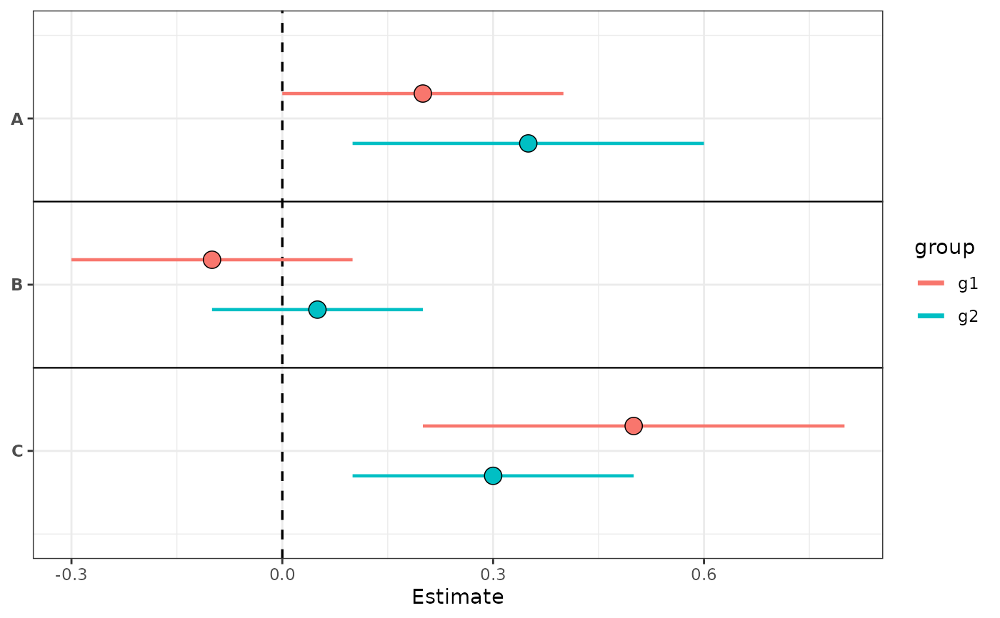
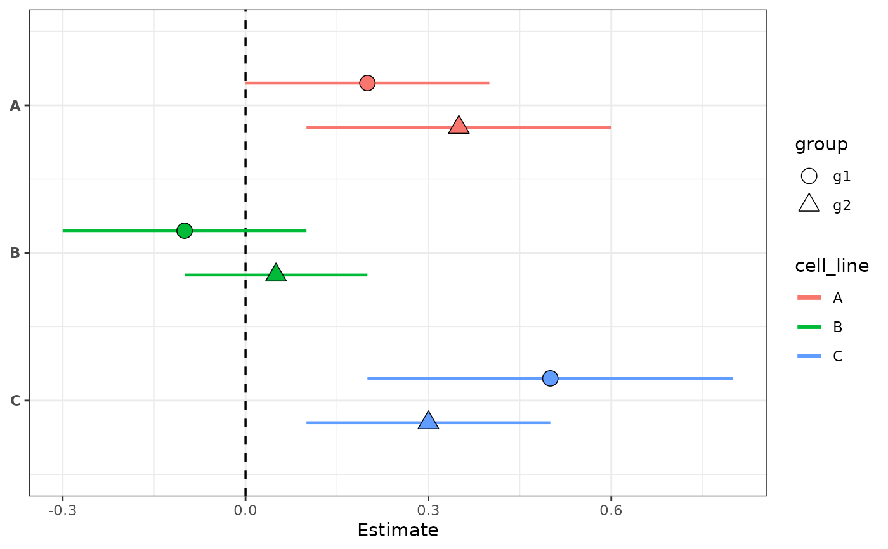
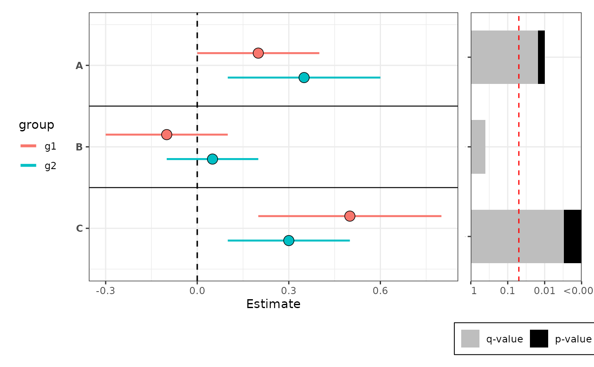
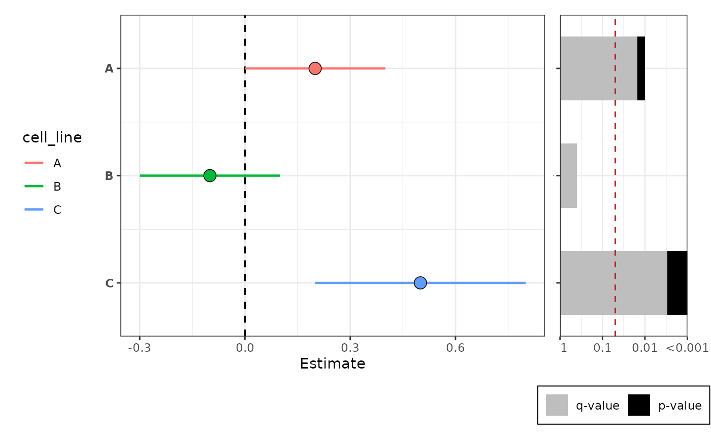

Dot-and-whisker plot of estimates with confidence intervals
Source:R/plot_dot_whiskers.R
plot_dot_whiskers.RdCreate a horizontal dot-and-whisker plot showing point estimates and confidence intervals for labeled rows. Optionally offset points and use different shapes or colors when a grouping column is supplied. Optionally append a p-value barplot to the right via patchwork.
Usage
plot_dot_whiskers(
data,
group_col = NULL,
x = "est",
xmin = "conf.low",
xmax = "conf.high",
label_col = "cell_line",
dodge_width = 0.3,
style = c("color", "shape"),
sep_linetype = "solid",
sep_linewidth = 0.4,
sep_color = "black",
vline_xintercept = 0,
vline_linetype = "dashed",
vline_color = "black",
point_shapes = c(21, 24, 22, 25, 23),
pvalue_col = NULL,
pvalue_plot_width = 0.3,
...
)Arguments
- data
A data.frame or tibble containing the columns referenced by
x,xmin,xmax, andlabel_col.- group_col
Optional string name of a factor grouping column. When provided, points are offset by group for visibility. Factor levels control the ordering and direction of the dodge offset: the first level is plotted at the top of each row.
- x
String name of the estimate column. Default
"est".- xmin
String name of the lower-interval column. Default
"conf.low".- xmax
String name of the upper-interval column. Default
"conf.high".- label_col
String name of the label/row identifier column. Must be a factor; factor levels control the top-to-bottom row ordering (first level appears at the top). Default
"cell_line".- dodge_width
Numeric. Total vertical spread across groups. Default
0.3.- style
String. Controls group encoding when
group_colis supplied."color"(default) uses different colors per group and draws horizontal separator lines between rows."shape"uses the same color perlabel_colrow and different point shapes per group.- sep_linetype
Line type for row separator lines when
style = "color". Default"solid".- sep_linewidth
Line width for row separator lines when
style = "color". Default0.4.- sep_color
Color for row separator lines when
style = "color". Default"black".- vline_xintercept
Numeric. Position of the vertical reference line. Default
0.- vline_linetype
Line type for the vertical reference line. Default
"dashed".- vline_color
Color for the vertical reference line. Default
"black".- point_shapes
Integer vector of point shapes to use when
style = "shape". Must have at least as many elements as there are levels ingroup_col. Defaults toc(21, 24, 22, 25, 23)(up to 5 groups). Seegraphics::points()for shape codes.- pvalue_col
Optional string name of a column in
datacontaining one p-value perlabel_colrow. When supplied, aplot_pvalue_barplot()is appended to the right using patchwork. The p-value used for each row is taken from the first occurrence within thatlabel_colgroup, so the column must be constant within each row. Requires the patchwork package.- pvalue_plot_width
Relative width of the p-value panel passed to
patchwork::wrap_plots()widths. Default0.3.- ...
Additional arguments passed to
plot_pvalue_barplot()whenpvalue_colis supplied.
Examples
df <- data.frame(
cell_line = factor(c("A", "A", "B", "B", "C", "C"), levels = c('A', 'B', 'C')),
est = c(0.2, 0.35, -0.1, 0.05, 0.5, 0.3),
conf.low = c(0.0, 0.10, -0.3, -0.10, 0.2, 0.1),
conf.high = c(0.4, 0.60, 0.1, 0.20, 0.8, 0.5),
group = factor(c("g1", "g2", "g1", "g2", "g1", "g2"), levels = c("g1", "g2")),
pvalue = c(0.01, 0.01, 0.4, 0.4, 0.001, 0.001)
)
# color style: groups distinguished by color, separator lines between rows
plot_dot_whiskers(df, group_col = "group", style = "color")

# shape style: groups distinguished by point shape, rows colored by label
plot_dot_whiskers(df, group_col = "group", style = "shape")

# with p-value barplot appended on the right
plot_dot_whiskers(
df,
group_col = "group",
style = "color",
pvalue_col = "pvalue",
mlog10_transform_pvalue = TRUE
)
#> Scale for y is already present.
#> Adding another scale for y, which will replace the existing scale.

# no grouping, with p-value barplot appended on the right
df_single <- data.frame(
cell_line = factor(c("A", "B", "C"), levels = c("A", "B", "C")),
est = c(0.2, -0.1, 0.5),
conf.low = c(0.0, -0.3, 0.2),
conf.high = c(0.4, 0.1, 0.8),
pvalue = c(0.01, 0.4, 0.001)
)
plot_dot_whiskers(
df_single,
pvalue_col = "pvalue",
mlog10_transform_pvalue = TRUE
)
#> Scale for y is already present.
#> Adding another scale for y, which will replace the existing scale.
